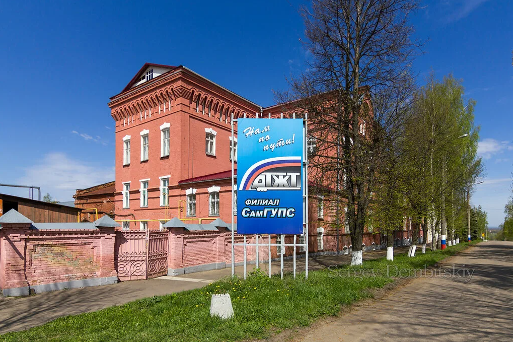
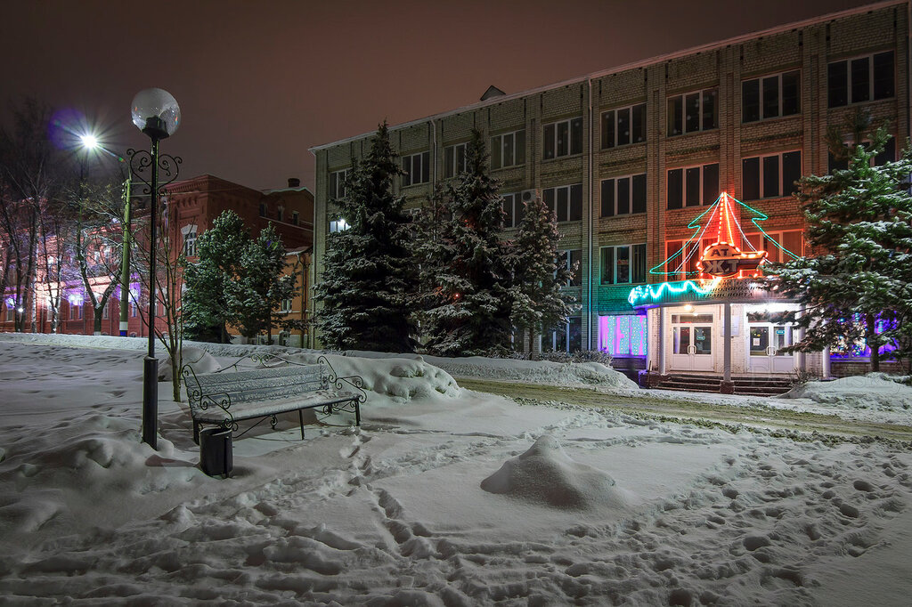
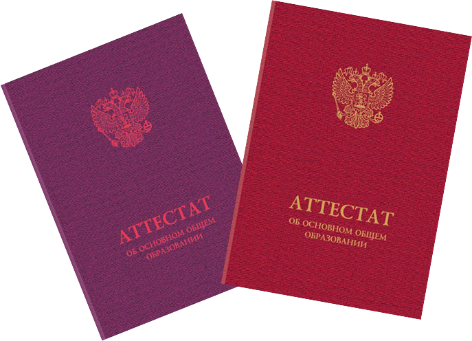

Филиал СамГУПС в г.Алатыре
Филиал федерального государственного бюджетного образовательного учреждения высшего образования
"Самарский государственный университет путей сообщения" в г.Алатыре


Алатырский техникум железнодорожного транспорта организован в августе 1930 решением Совнаркома Чуваш. АССР на основе распоряжения Наркомата путей сообщения СССР. До 1937 назывался техникумом путей сообщения. В 1930–41 входил в состав транспорт. учеб. комбината вместе со школами ФЗУ и технической. Имел тягово-ремонт. и деповско-ремонт. отделения, готовил техников по специальности «Паровозное хозяйство».
В 1934 открыто отделение по специальности «Сварочное производство». В послевоен. период имел отделения механич. (по специальности техник-механик паровоз. хозяйства), вагон. хозяйство, тепловоз. хозяйство, технологич. (по специальности техник-технолог свароч. производства), строительство и эксплуатация путевого хозяйства, обработка материалов на станках и автоматич. линиях.
С 1990-х гг. велась подготовка кадров по специальностям: технич. обслуживание и ремонт подвиж. состава; организация перевозок и управление движением на железнодорож. транспорте; строительство желез. дорог и путевое хозяйство. С 1994 А.т.ж.д. является филиалом Самар. государствен. университета путей сообщения. В 2003 восстановлена специальность по вагон. хозяйству (готовит специалистов для вагоноремонт. заводов).
С 2006 подготовка специалистов осуществляется по следующим специальностям: технич. эксплуатация подвиж. состава желез. дорог (тепловозы и дизель – поезда, вагоны); организация перевозок и управление на транспорте (по видам); строительство желез. дорог, путь и путевое хозяйство; программирование в компьютер. системах. Имеется заоч. отделение. За 1930–2019 учеб. заведение подготовило более 19 тыс. специалистов железнодорож. транспорта.
Многие выпускники стали известными руководителями на транспорте, промышлен. предприятиях. В числе выпускников Герой Советского Союза И.А. Кабалин, генерал-майор А.С. Лашманов, доктор физико-математических наук В.И. Косов и др.
Прием документов на поступление в колледж осуществляется с 1 ИЮНЯ 2023 года.
Прием в колледж осуществляется на общедоступной основе, без вступительных экзаменов.
Календарь абитуриента – контрольные даты приема и поступления в колледж
{kind=link}
Документы для поступления
Оригинал и копия паспорта

Аттестат оригинал или копия

Заявление(заполняется в приемной комиссии)

Для представления документов в электронно-цифровой форме необходимо
произвести следующие действия:
1. Отсканировать или сфотографировать:
- страницы паспорта 2-3 (персональные данные), 5-6 (прописка);
- все страницы (кроме обложки и форзацев) документа об образовании (аттестата) и (или)
документа об образовании и о квалификации (диплома).
- фотографию поступающего (6 фотографий 3x4)
- медицинская справка
2. Перевести эти файлы в формат pdf
3.Прикрепить заполненную Анкету, Заявление и Согласие на обработку персональных данных
Поступающие вправе направить/представить в образовательную организацию заявление
о приеме, а также необходимые документы одним из следующих способов:
1) лично в образовательную организацию;
2) через операторов почтовой связи общего пользования (далее - по почте) заказным
письмом с уведомлением о вручении.
При направлении документов по почте поступающий к заявлению о приеме прилагает
копии документов, удостоверяющих его личность и гражданство, документа об образовании и
(или) документа об образовании и о квалификации, а также иных документов.
 Адрес:429820, Чувашская Республика г.Алатырь,ул.Первомайская 48
Адрес:429820, Чувашская Республика г.Алатырь,ул.Первомайская 48
3) в электронной форме в соответствии с Федеральным законом от 6 апреля 2011г. № 63-
ФЗ «Об электронной подписи», Федеральным законом от 27 июля 2006г. № 149-ФЗ «Об
информации, информационных технологиях и о защите информации», Федеральным законом
от 7 июля 2003г. № 126-ФЗ «О связи» (документ на бумажном носителе, преобразованный в
электронную форму путем сканирования или фотографирования с обеспечением
машиночитаемого распознавания его реквизитов):
- посредством электронной почты техникума, в том числе с использованием
функционала официального сайта техникума в информационно-телекоммуникационной сети
«Интернет», или иным способом с использованием информационно-телекоммуникационной
сети «Интернет»
Образовательная организация осуществляет проверку достоверности сведений, указанных в заявлении о приеме, и соответствия действительности поданных электронных образов документов. При проведении указанной проверки организация вправе обращаться в соответствующие государственные информационные системы, государственные (муниципальные) органы и организации